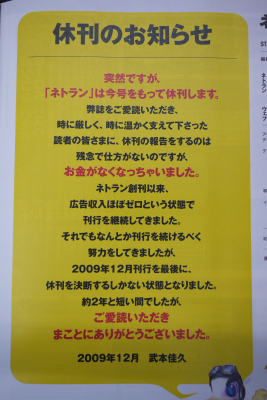

ネトラン最終号、本日発売 51
ストーリー by hylom
なんか違和感あると思ったらやっぱり 部門より
なんか違和感あると思ったらやっぱり 部門より
PC雑誌「ネトラン」が休刊となるそうだ。ネトランはソフトバンク クリエイティブが発行していた「ネットランナー」を前身とする雑誌で、ネットランナーの休刊後、編集長やスタッフが独立して立ち上げた「にゅーあきば」社からの刊行を続けていた。
なお、ネトランが休刊するというニュースがITmediaに掲載されていたが、f/x ITメディア・タンクによると、この記事に誤報があった模様。
といっても休刊になるというのは事実。ITmediaの記事では、資金繰り悪化のため「11月8日に発行した2009年12月号を最後に休刊した。発行元のにゅーあきばは12月7日に明らかにした」とされていたが、最終号は本日発売の2010年1月号となる。
先日はPCJapan休刊というニュースもあり、かつてはPC雑誌を読みふけっていた身としては非常に残念でならない。

なるべくして (スコア:5, すばらしい洞察)
そもそも対象とする読者層が「無料でぶっこ抜き」大好きという時点でねえ。
つまり、コンテンツや著作物に対して正当な対価を払うのが嫌な人たちなわけで。
自分たちの刊行物だけは購入してもらえると思っていたのだろうか。
部数が増えなければ、広告だってこないわけだし、まあ編集部としては努力をしていたのだろうけど、時間の問題だったと思うな。
というわけで、残って欲しい雑誌があれば、たとえ積ん読になっても買い支えないとだめだね。
余談だけど、近所の本屋がなくなると困るので、Amazonで買えるものでもあえて近所の本屋で買う運動を実施中。